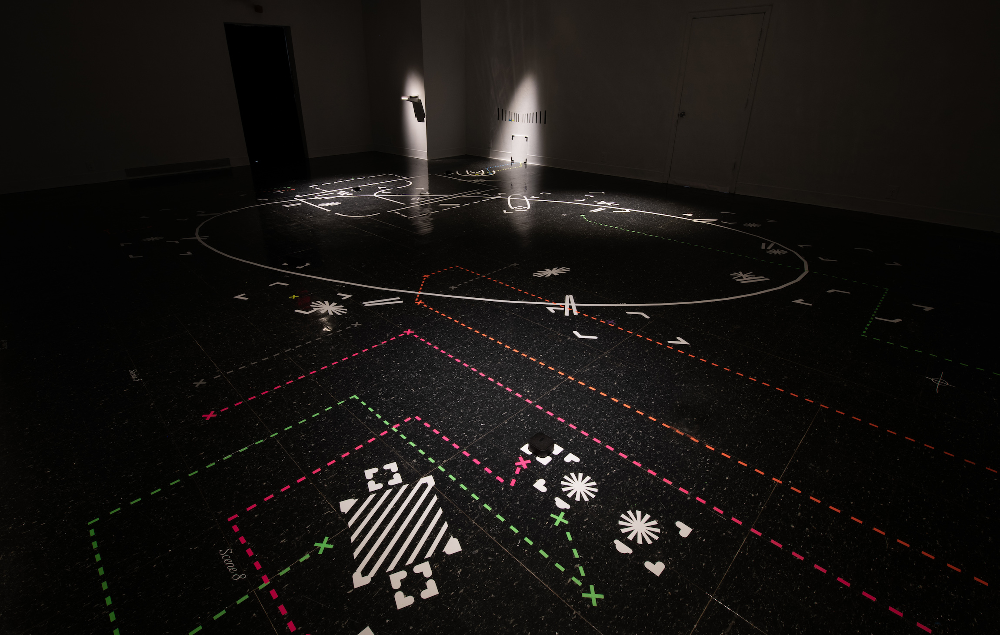
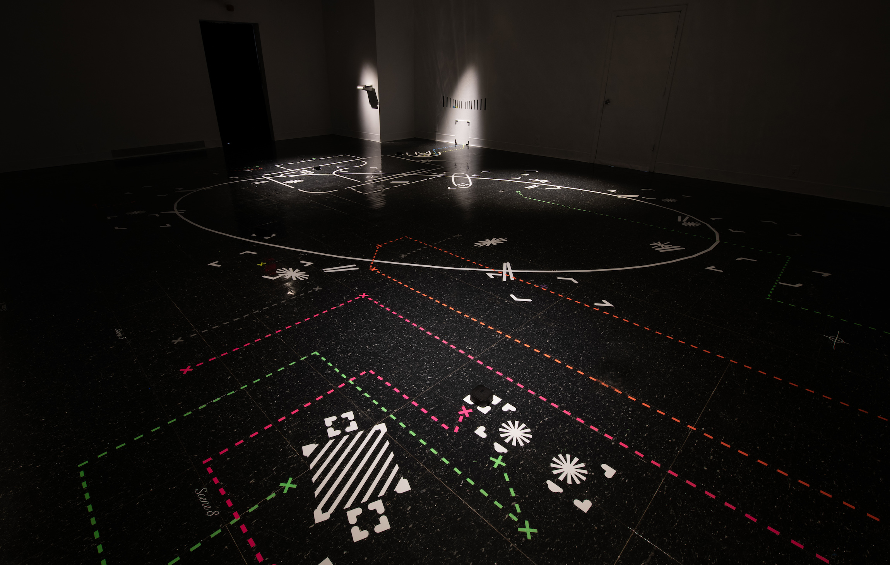

Phantom Scripting
MFA Thesis Show, December 2022.
Environmental Design, Sound Design.
Installation - Vinyl, Spike Tape, Six Speakers.
Phantom Scripting is an immersive environment and multitrack sound installation that explores the experience of figuring out the phantom rules in the new culture system of migrants.
The gallery space is redesigned to be a complex theatre stage. The screenplay is based on five Taiwanese movies and dramas about local Taiwanese culture and the phantom rules in the local society.
By offering the script to the audience but having the actors absent on the stage, audiences are challenged to puzzle the system in the space and the relationship between the script and the stage.
The artist utilized the same symbolic visual language in both the script and the space and provides movement instruction for audiences to interact with the scenes. For instance, theatrical stage marks on the gallery floor indicate where an actor on the stage would be positioned, and their movement through space. The same marking system is adapted to the script put beside the text dialog. The actor then becomes an invisible phantom, relying on viewers in the gallery to maintain their imaginary existence.
This experience of figuring out a system in the space overlaps with the social experience of exploring a new cultural system as a migration.
 
